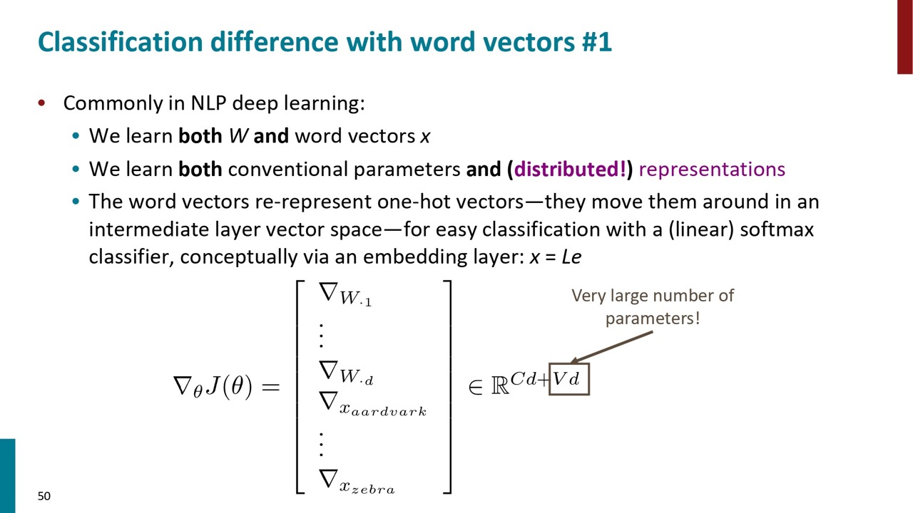
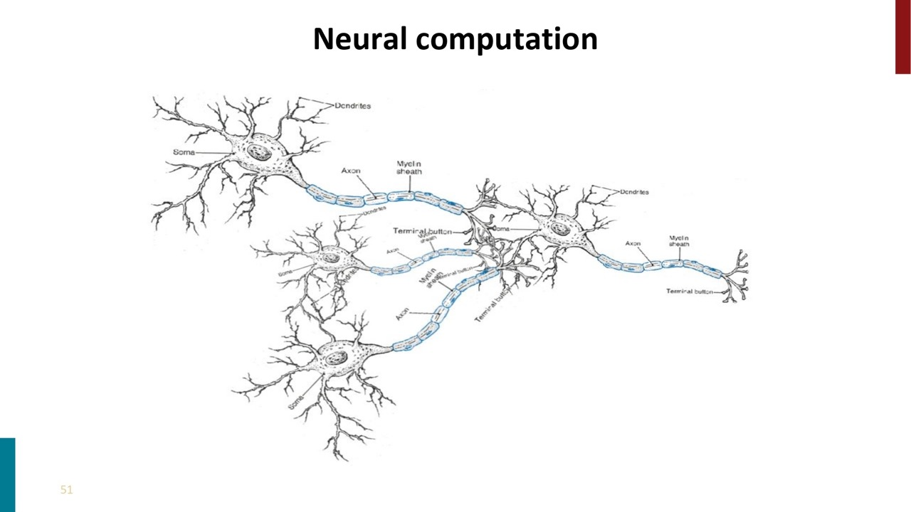

Stanford CS224N 深層学習による自然言語処理 Lecture 2 まとめ
授業のロジ
Word2vecのモデルを紹介し、ランダムなワードベクトルから始めて、テキストの大量のコーパスを通じて各ワードを反復処理します。各位置で、中心ワードの周囲にどのワードが出現するかを予測しようとします。これは、中心ワードとコンテキストワードのワードベクトル間のドット積に基づいて定義される確率分布によって行います。これにより、あるワードが特定のコンテキスト内に出現する確率推定が得られます。実際のワードがこの機会にコンテキスト内に出現した場合、そのワードがコンテキスト内に出現する可能性を高めるようにワードベクトルを更新します。そして、このシンプルなアルゴリズムだけで、ワードの類似性とワードスペース内の意味のある方向をうまく捉えるワードベクトルを学習することができます。


今日の主な内容は、ワードベクトルについてさらに詳しく学び、ワードセンスに触れ、ニューラルネットワーク分類器の概念を紹介することです。今日のクラスの終わりまでには、GoogleのWord2vec論文やGLoVe論文、または後で取り上げるSanjeev Aroraの論文など、ワード埋め込みに関する論文を自信を持って理解できるようになることが最大の目標です。
まず、Word2vecのモデルの復習をします。Word2vecはランダムなワードベクトルから始めて、大量のコーパスを通じて、各位置の中心語の周囲にどのワードが出現するかを予測しようとします。予測の確率部分は、中心語と文脈語の類似度と中心語とすべての単語の類似度との割り算で計算します。このシンプルなアルゴリズムだけで、ワードの類似性とワードスペース内の意味のある方向をうまく捉えるワードベクトルを学習することができます。
ワードベクトルには、中心語ベクトルと文脈語ベクトルがあり、これらの内積を取ることで、特定の文脈語が中心語と共に出現する確率のスコアを得ます。そして、これらのスコアを確率に変換するためにsoftmax変換を使用します。このモデルは、自然言語処理で「Bag of words」モデルと呼ばれ、単語の順序や位置には注意を払わない特徴があります。
ワードベクトルは、高次元ベクトル空間内で意味的に類似した単語が近くに配置されるように学習されます。例えば、曜日や携帯電話のブランド、学問の分野など、意味的に関連性のある単語はベクトル空間内で近くにグループ化されます。しかし、このベクトル空間は高次元であり、我々が視覚的に理解できるようにあえて2次元空間に落としているだけです。2次元で近い位置であっても、高次元の中で遠い距離になっているかもしれません。
ワードベクトルの学習方法については、ランダムなワードベクトルから始め、損失関数を定義し、勾配降下法を用いて損失関数を最小化するようにベクトルを更新していきます。具体的には、現在のパラメータから勾配を計算し、その負の方向に小さなステップを進めることで、損失関数を最小化する方向に進んでいきます。
ステップサイズは調整可能で、小さすぎると計算が多くなり、大きすぎると最適解に収束しない可能性があります。また、ニューラルネットワークは一般的に凸ではないため、最適解が一意でない可能性がありますが、実際には問題なく動作します。
(勾配降下法について詳しく知りたい方は、CourseraのAndrew Ng先生の機械学習の授業の受講を強くおすすめします。)
勾配降下法とは、現在のパラメータθの値を持ち、学習率またはステップサイズαを使用して勾配の負の方向に少し移動します。これにより、新しいパラメータ値が得られます。これらはベクトルであり、各個別のパラメータは、そのパラメータに対するjの偏微分を計算することで少し更新されます。これが単純な勾配降下法のアルゴリズムです。
ワードベクトルの学習方法については、ランダムなワードベクトルから始め、損失関数を定義し、勾配降下法を用いて損失関数を最小化するようにベクトルを更新していきます。具体的には、現在のパラメータから勾配を計算し、その負の方向に小さなステップを進めることで、損失関数を最小化する方向に進んでいきます。
ステップサイズは調整可能で、小さすぎると計算が多くなり、大きすぎると最適解に収束しない可能性があります。また、ニューラルネットワークは一般的に凸ではないため、最適解が一意でない可能性がありますが、実際には問題なく動作します。
全コーパスを用いて損失関数やその勾配を計算すると、非常に時間がかかり、一度の勾配更新に長い時間を要するため、最適化が極めて遅くなります。そのため、ニューラルネットワークではほぼ100%の場合、勾配降下法ではなく確率的勾配降下法(SGD)が用いられます。SGDでは、全コーパスに基づく勾配の推定ではなく、一つまたは少数の中心語に基づく勾配の推定を行います。この推定はノイズが多く不完全ですが、それを用いてパラメータを更新します。これにより、一度のコーパス通過で何十億ものパラメータ更新が可能となり、学習速度が大幅に向上します。
また、SGDは学習過程で揺れ動く特性がありますが、これが複雑なネットワークではより良い解を学習することを可能にします。したがって、確率的勾配降下法は計算速度を大幅に向上させるだけでなく、より良い結果を得ることができます。
特定のウィンドウに基づく確率的勾配更新では、ウィンドウ内に存在する一部の単語に対する勾配情報のみが得られ、語彙の大部分については勾配更新情報が得られないため、非常にスパースな勾配更新となります。例えば、Windowは5の場合は中心語を含めて見える単語数は5+5+1=11個です。なので、アップデートすべき単語はこの11個のみです。他のところの勾配は全部0になります。
したがって、システム最適化を考える場合、実装する際に少数の単語のパラメータのみを更新することを考慮すべきです。
また、ワードベクトルは、数学的な観点からは列ベクトルとして表現されることが多いですが、実際の深層学習パッケージでは行ベクトルとして表現されることが一般的です。これは、メモリの連続した範囲としてワードベクトル全体にアクセスできるため、効率的です。
Word2vecでは、各単語タイプに対して中心語ベクトルと文脈語ベクトルの2つのベクトルが存在します。これらは最終的に平均化され、似ているが完全に同一ではありません。単語ごとに1つのベクトルだけを使用してWord2vecアルゴリズムを実装することも可能で、これは少し効果的ですが、アルゴリズムを複雑にします。
また、Word2vecモデルには基本的なモデルのバリアントは2つあり、一つは「Skip-grams」で、もう一つは「CBOW」です。違いとしては、中心語を予測するか、文脈語を予測するかのことです。これらは似たような結果をもたらしますが、Skip-gramの方が自然で、後続の研究でよく用いられます。また、これまでに紹介したのは単純だがわかりやすいSoftmaxです。しかし、実際には、論文では「negative sampling」と呼ばれる方法を使用することを提案しています。
Naive softmaxを使用すると、分母を計算するのが非常にコストがかかるという問題があります。これは、語彙のすべての単語に対して内積を計算する必要があるためです。例えば、語彙が10万語ある場合、分母を計算するためには10万回の内積の計算が必要となります。これを解決するために、ネガティブサンプリングという手法が提案されています。
これは、Softmaxを使用する代わりに、真の中心語と文脈語のペアと、ノイズペア（真の中心語を保持し、文脈語をランダムに選択したペア）に対して、ロジスティック回帰モデルを訓練するというアイデアです。
もともとのSoftmaxの分子は真の中心語と文脈語のペアの類似度、それをなるべく大きくにしたいです。分母はノイズペアの類似度の足し算、それをなるべく小さくしたいです。ネガティブサンプリングの目標関数の前の項目はSoftmaxの分子に対応し、後ろの項目は分母に対応しています。そのため、計算量が減らしながら、モデルを学習することができます。

また、Word2vecの論文では、単語のサンプリングにおいて、単語の出現確率や一様分布に基づいて単語をサンプリングするのではなく、単語のユニグラム分布（大規模コーパス内での単語の出現頻度）を3/4乗してサンプリングします。これにより、頻出語と稀出語の差が緩和され、稀出語がやや頻繁にサンプリングされるようになります。これらの手法により、Word2vecは効率的にワードベクトルを学習することができます。
なぜ直接共起回数をカウントしないか
単語の共起行列を作成する方法には2つあります。
一つは既に見てきたように単語の周囲のウィンドウを使用する方法で、これはWord2vecと似ています。これにより、より細かい文法的・意味的な近さを捉えることができます。
もう一つの方法は、ウィンドウサイズを段落や全体のウェブページにして共起をカウントすることです。通常、ドキュメントにはある種の構造があり、それが段落であったり、実際のウェブページのようなドキュメントのサイズであったりします。そのような構造から単語の意味を捉えることできます。これは情報検索や潜在的意味解析のような方法でよく使用されます。
一個の例を紹介します。具体的には、小さなコーパス（「I like deep learning. I like NLP. I enjoy flying.」）を例に、ウィンドウサイズを1として共起行列を作成しました。この行列では、「I like」が2回、「Deep learning」が1回出現するなど、単語の共起回数が記録されます。この共起行列から、単語の共起ベクトルとしての表現を得ることができます。例えば、「I」の行ベクトルは「I」の表現となります。これにより、意味や使用法が似ている単語は、類似したベクトルを持つと予想できます。
これらのカウントベースの単語ベクトルは、それなりに使えますが、いくつかの問題があります。
まず、これらのベクトルは非常に大きく、かつスパース（疎）です。これは、単語ベクトルが非常に大きいためで、通常使用する単語ベクトルよりもはるかに大きいです。
また、非常に高次元のベクトルを持つため、スパース性とランダム性が高くなり、コーパスの特定の内容によって結果がノイジーになり、性能が安定ではないです一般的に、低次元のベクトルを使用することでより良い結果を得ることができます。
そのため、重要な情報を固定された小さな次元数の密ベクトルに格納することで、単語の分布と他の単語の文脈についてのほとんどの情報を保存することができます。実際には、使用されるベクトルの次元数は通常25から1000の間です。したがって、カウント共起ベクトルの次元数を削減する方法が必要となります。
次元削減の方法として特異値分解（SVD）があります。SVDは、任意の行列（例えば単語の共起行列）を3つの行列（U、対角行列Σ、V転置行列）に分解します。この分解により、元の行列を最大限に再現する低次元の行列を得ることができます。
しかし、単語の共起回数をそのままの形でSVDに適用すると、結果はあまり良くないです。これは、単語の出現回数が正規分布に従わないためです。そのため、共起回数をスケーリングすることで、より有用な単語ベクトルを得ることができます。
具体的には、生の共起回数の対数を取る、最大の共起回数を制限する、機能語を除去するなどの方法が提案されました。これらの手法は、1990年代から2000年代にかけて研究され、共起行列を改善する方法として有効であることが示されました。
共起回数でベクトルを生成するCOALSモデルから単語の意味的な成分が線形的に捉えられることがわかりました。例えば、「drive」から「driver」、「swim」から「swimmer」、「teach」から「teacher」、「marry」から「priest」への変化は、それぞれがほぼ平行で、ほぼ同じ大きさのベクトル成分を持つことから、これらは意味的な成分を表しています。この意味的な成分は、単語のアナロジーを解く際に利用できます。例えば、「drive」は「driver」に対して、「marry」は何に対応するかという問いに対して、この意味的な成分を加えることで「priest」を導き出すことができます。
このように、カウントベースの手法とWord2vecのアルゴリズムは、単語の意味的な関連性を捉える点で共通点を持つことがわかります。
GLoVeアルゴリズムは、線形代数に基づく共起行列の手法（LSAやCOALSなど）と、反復的なニューラル更新アルゴリズム（skip-gramやCBOWなど）を結びつけることを目指して開発されました。
線形代数の手法は訓練の速度や統計の効率的な利用に優れていましたが、大量のカウントに過度な重要性を与えるため、結果は必ずしも良好ではありませんでした。一方、ニューラルモデルは、共起行列に対する統計の利用が非効率的なように見えましたが、時間と空間をトレードオフにすることで大規模なコーパスにスケールすることが容易でした。また、ニューラルモデルは、単語の類似性だけでなく、それを超える複雑なパターンを捉えることができました。
GLoVeモデルは、共起行列のモデルとニューラルモデルの思考を統一しようとしました。これは、共起行列のカウントの上で計算されるニューラルモデルに似ています。
前のグラフで示したように、男性から女性へ、女王から王への単語の意味成分(スペクトル)を単語ベクトルの減算と加算で表現できます。これらの意味成分は、共起確率の割り算としても表現できるのではないかと推測します。
例えば、固体から気体への意味成分を取り出したいとします。単語が氷と共起するかどうかを見ることで固体の部分を取り出すことができるかもしれません。そして、「固体」は氷と共起するので、それは有望に見えます。一方、ガスは氷とあまり共起しないので、それも有望に見えます。しかし、問題は、「水」も氷と多く共起するということです。また、もしランダムな他の単語を取ると、それはおそらく氷とあまり共起しないでしょう。
それに対して、単語が蒸気と共起するかどうかを見ると、固体は蒸気とあまり共起しないでしょうが、ガスはそうです。水もまたそうであり、ランダムな単語は少ないでしょう。したがって、我々が取り出したい意味成分、つまりガスから固体への移行を得るためには、実際にはこれらの共起確率の比率を見ることが非常に有用です。なぜなら、それによって我々は固体とガスの間で大から小へのスペクトルを得ることができ、水やランダムな単語に対してはそれが基本的にキャンセルアウトして1を与えるからです。
大きなコーパスでそれらを数え上げると、基本的にこれが得られます。これらは実際の共起確率です。そして、水と私のランダムな単語（ここでは「ファッション」）については、これらは約1です。一方、固体が氷または蒸気と共起する確率の比率は約10で、ガスは約1/10です。
では、これらの共起確率の比率を線形の意味成分としてどのように捉えることができるでしょうか？単語ベクトル空間内で、単に線形の意味成分を加算し、減算することができるようにするためにはどうすればよいのでしょうか？それは、我々が対数二次モデルを構築することで達成できるように思われます。つまり、二つの単語ベクトル間の内積が共起確率の対数を近似するようにします。
それを行うと、二つのベクトル間の差が他の単語との類似性に対応し、前のスライドに示した確率比の対数になります。したがって、GloVeモデルは、共起行列モデルとニューラルモデルの思考を統一しようとしました。それはある意味でニューラルモデルに似ていますが、実際には共起行列のカウントの上で計算されます。
GloVeモデルは、共起行列モデルとニューラルモデルの思考を統一することを目指し、共起行列のカウントに基づいて計算される一方で、ニューラルモデルと同様の性質を持つように設計されました。具体的な損失関数は、内積が共起の対数に近いことを目指しています。また、「a」、「in」のような一般的な単語がに大きく影響されることを防ぐ関数を使用しています。
この関数を直接共起カウント行列に最適化することで、大規模なコーパスに対して高速な訓練が可能となります。
このアルゴリズムを使用して「frog」（カエル）に最も近い単語を求めると、「frogs」、「toad」などの単語が得られ、これらはすべてカエルを指す単語であることがわかります。これにより、GloVeモデルがうまく機能していることが示されました。
では、単語ベクトルをどのように評価することができますか？一般的に、NLPの評価については、内的評価と外的評価の2つの方法があります。
内的評価とは、直接もしくは中間のサブタスクに評価することです。例えば単語の類似度を測る。内的評価は計算が速いですが、全体のシステムにどれぐらい効果があるかは不明です。したがって、人々は外的評価にも非常に興味があります。
外的評価とは、全体のフローの中で評価することです。それで全体への影響が見えますが、いくつかの欠点もあります。外的タスクで評価するのには時間がかかります。また、ベクトルのホントの効果を測れないです。それにより、数字が悪くなっている時、ワードベクトルが悪いか、それとも他のプロセスとの相性が悪いかがわからないです。性能を具体的にわからないと、改善できないです。
内的評価の一つの方法は、単語ベクトルの類推です。男性が女性に対して王であると言えば、女王が出てくると期待します。
GloVeベクトルからの結果を表示しています。GloVeはまさにそういった線形関係をみえることができます。
これらの単語ベクトルは実際には世界の知識のかなりを学びます。例えば、会社とその会社のCEOもわかります。
また、肯定形、比較形、最上級形の形容詞のベクトルもおおよそ線形成分で移動します。
このテーブルからGloVeはSVD、またはWord2vec(CBOWとSG)より優れていることがわかります。これは両方の長所を融合したためと当時は思いましたが、実際はそうではなさそうです。
その証拠はこちらのテスト結果です。Word2vecの学習データはニュースですが、GloVeモデルがWikipediaと他のテキストの両方で部分的に訓練されました。Wikipediaには様々の概念を紹介するテキストあるので、それを学習したほうが類似度の計算に有利になります。
また、GloVeの次元数による精度も測りました。結果から見ると、大体300次元で性能が飽和します。
別の内部評価として、これらのモデルが人間の単語の類似性の判断をどのようにモデル化するかを見ることができます。心理学者たちは何十年もの間、人間の単語の類似性のデータを取ってきました。具体的には、「教授」と「医者」のような単語のペアに対して、0から10の間のスコアを与える類似性のスコアを求めています。そして、それらは複数の人間の判断を平均したものです。 。
こちらのテストもGloVeの性能のほうが良いことを示しました。(単純に共起回数をSVDで次元圧縮したモデルもそれなり性能が良いです。)
次に外部評価の結果を見ましよう。外部評価としては固有名詞認識(Named entity recognition)を利用しています。それはテキストにある人名、組織名等のことを認識することです。こちらのGloVeが一番良いです。
次に単語の多義性について話をします。単語、特によく使う単語は複数の意味を持ちます。1個のワードベクトルを単語の複数の意味を捉えることができるのでようか。
例えば英語の「pike」は10種類以上の意味があります。
単語の各意味をぞれぞれベクトルで表現する研究は実は2012年にですでに行われました。その結果、例えば、jaguar が 獣としてhunterに近い例もありますし、MacOSの名前として softwareに近いベクトルもあります。
その研究は単語のベクトルをいくつかのサブベクトルに分解して学習したことです。
一方、これは実践での主流の方法ではありません。いくつかの理由があります。一つは手法の単純さです。もう一つの理由は、そもそもどのように単語の意味を分解するのは人ぞれぞれで、標準的なやり方がありません。


